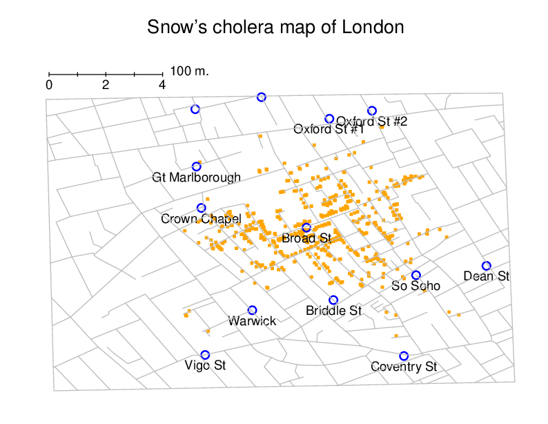

Figure 5.2: jamovi screen showing the histogram check box
Above all else show the data.
–Edward Tufte1
Visualising data is one of the most important tasks facing the data analyst. It’s important for two distinct but closely related reasons. Firstly, there’s the matter of drawing “presentation graphics”, displaying your data in a clean, visually appealing fashion makes it easier for your reader to understand what you’re trying to tell them. Equally important, perhaps even more important, is the fact that drawing graphs helps you to understand the data. To that end, it’s important to draw “exploratory graphics” that help you learn about the data as you go about analysing it. These points might seem pretty obvious but I cannot count the number of times I’ve seen people forget them.
To give a sense of the importance of this chapter, I want to start with a classic illustration of just how powerful a good graph can be. To that end, Figure 5.1 shows a redrawing of one of the most famous data visualisations of all time. This is John Snow’s 1854 map of cholera deaths. The map is elegant in its simplicity. In the background we have a street map which helps orient the viewer. Over the top we see a large number of small dots, each one representing the location of a cholera case. The larger symbols show the location of water pumps, labelled by name. Even the most casual inspection of the graph makes it very clear that the source of the outbreak is almost certainly the Broad Street pump. Upon viewing this graph Dr Snow arranged to have the handle removed from the pump and ended the outbreak that had killed over 500 people. Such is the power of a good data visualisation.
The goals in this chapter are twofold. First, to discuss several fairly standard graphs that we use a lot when analysing and presenting data, and second to show you how to create these graphs in jamovi. The graphs themselves tend to be pretty straightforward, so in one respect this chapter is pretty simple. Where people usually struggle is learning how to produce graphs, and especially learning how to produce good graphs. Fortunately, learning how to draw graphs in jamovi is reasonably simple as long as you’re not too picky about what your graph looks like. What I mean when I say this is that jamovi has a lot of very good default graphs, or plots, that most of the time produce a clean, high-quality graphic. However, on those occasions when you do want to do something non-standard, or if you need to make highly specific changes to the figure, then the graphics functionality in jamovi is not yet capable of supporting advanced work or detail editing.

Let’s begin with the humble histogram. Histograms are one of the simplest and most useful ways of visualising data. They make most sense when you have an interval or ratio scale variable (e.g., the afl.margins data from Chapter 4) and what you want to do is get an overall impression of the variable. Most of you probably know how histograms work, since they’re so widely used, but for the sake of completeness I’ll describe them. All you do is divide up the possible values into bins and then count the number of observations that fall within each bin. This count is referred to as the frequency or density of the bin and is displayed as a vertical bar. Ihe AFL winning margins data there are 33 games in which the winning margin was less than 10 points and it is this fact that is represented by the height of the leftmost bar that we showed earlier in Chapter 4, Figure 4.2. With these earlier graphs we used an advanced plotting package in R which, for now, is beyond the capability of jamovi. But jamovi gets us close, and drawing this histogram in jamovi is pretty straightforward. Open up the ‘plots’ options under ‘Exploration’ - ‘Descriptives’ and click the ‘histogram’ check box, as in Figure 5.2. jamovi defaults to labelling the y-axis as ‘density’ and the x-axis with the variable name. The bins are selected automatically, and there is no scale, or count, information on the y-axis unlike the previous Figure 4.2. But this does not matter too much because after all what we are really interested in is our impression of the shape of the distribution: is it normally distributed or is there a skew or kurtosis? Our first impressions of these characteristics come from drawing a histogram.
One additional feature that jamovi provides is the ability to plot a ‘Density’ curve. You can do this by clicking the ‘Density’ check box under the ‘Plots’ options (and unchecking ‘Histogram’), and this gives us the plot shown in Figure 5.3. A density plot visualises the distribution of data over a continuous interval or time period. This chart is a variation of a histogram that uses kernel smoothing to plot values, allowing for smoother distributions by smoothing out the noise. The peaks of a density plot help display where values are concentrated over the interval. An advantage density plots have over histograms is that they are better at determining the distribution shape because they’re not affected by the number of bins used (each bar used in a typical histogram). A histogram comprising of only 4 bins wouldn’t produce a distinguishable enough shape of distribution as a 20-bin histogram would. However, with density plots, this isn’t an issue.
Although this image would need a lot of cleaning up in order to make a good presentation graphic (i.e., one you’d include in a report), it nevertheless does a pretty good job of describing the data. In fact, the big strength of a histogram or density plot is that (properly used) it does show the entire spread of the data, so you can get a pretty good sense about what it looks like. The downside to histograms is that they aren’t very compact. Unlike some of the other plots I’ll talk about it’s hard to cram 20-30 histograms into a single image without overwhelming the viewer. And of course, if your data are nominal scale then histograms are useless.
Another alternative to histograms is a boxplot, sometimes called a “box and whiskers” plot. Like histograms they’re most suited to interval or ratio scale data. The idea behind a boxplot is to provide a simple visual depiction of the median, the interquartile range, and the range of the data. And because they do so in a fairly compact way boxplots have become a very popular statistical graphic, especially during the exploratory stage of data analysis when you’re trying to understand the data yourself. Let’s have a look at how they work, again using the afl.margins data as our example.
The easiest way to describe what a boxplot looks like is just to draw one. Click on the ‘Box plot’ check box and you will get the plot shown on the lower right of Figure 5.4. jamovi has drawn the most basic boxplot possible. When you look at this plot this is how you should interpret it: the thick line in the middle of the box is the median; the box itself spans the range from the 25th percentile to the 75th percentile; and the “whiskers” go out to the most extreme data point that doesn’t exceed a certain bound. By default, this value is 1.5 times the interquartile range (IQR), calculated as 25th percentile - (1.5*IQR) for the lower boundary, and 75th percentile + (1.5*IQR) for the upper boundary. Any observation whose value falls outside this range is plotted as a circle or dot instead of being covered by the whiskers, and is commonly referred to as an outlier. For our AFL margins data there are two observations that fall outside this range, and these observations are plotted as dots (the upper boundary is 107, and looking over the data column in the spreadsheet there are two observations with values higher than this, 108 and 116, so these are the dots).

A variation to the traditional box plot is the violin plot. Violin plots are similar to box plots except that they also show the kernel probability density of the data at different values. Typically, violin plots will include a marker for the median of the data and a box indicating the interquartile range, as in standard box plots. In jamovi you can achieve this sort of functionality by checking both the ‘Violin’ and the ’Box plot’ check boxes. See Figure 5.5, which also has the ‘Data’ check box turned on to show the actual data points on the plot. This does tend to make the graph a bit too busy though, in my opinion. Clarity is simplicity, so in practice it might be better to just use a simple box plot.
One last thing. What if you want to draw multiple boxplots at once? Suppose, for instance, I wanted separate boxplots showing the AFL margins not just for 2010 but for every year between 1987 and 2010. To do that the first thing we’ll have to do is find the data. These are stored in the aflsmall2.csv file. So let’s load it into jamovi and see what is in it. You will see that it is a pretty big data set. It contains 4296 games and the variables that we’re interested in. What we want to do is have jamovi draw boxplots for the margin variable, but plotted separately for each year. The way to do this is to move the year variable across into the ‘Split by’ box, as in Figure 5.6
The result is shown in Figure 5.7. This version of the box plot, split by year, gives a sense of why it’s sometimes useful to choose box plots instead of histograms. It’s possible to get a good sense of what the data look like from year to year without getting overwhelmed with too much detail. Now imagine what would have happened if I’d tried to cram 24 histograms into this space: no chance at all that the reader is going to learn anything useful.

Because the boxplot automatically separates out those observations that lie outside a certain range, depicting them with a dot in jamovi, people often use them as an informal method for detecting outliers: observations that are “suspiciously” distant from the rest of the data. Here’s an example. Suppose that I’d drawn the boxplot for the AFL margins data and it came up looking like Figure 5.8. It’s pretty clear that something funny is going on with two of the observations. Apparently, there were two games in which the margin was over 300 points! That doesn’t sound right to me. Now that I’ve become suspicious it’s time to look a bit more closely at the data. In jamovi you can quickly find out which of these observations are suspicious and then you can go back to the raw data to see if there has been a mistake in data entry. To do this you need to set up a filter so that only those observations with values over a certain threshold are included. In our example, the threshold is over 300, so that is the filter we will create. First, click on the ‘Filters’ button at the top of the jamovi window, and then type ‘margin � 300’ into the filter field, as in Figure 5.9.
This filter creates a new column in the spreadsheet view where only those observations that pass the filter are included. One neat way to quickly identify which observations these are is to tell jamovi to produce a ‘Frequency table’ (in the ‘Exploration’ - ‘Descriptives’ window) for the ID variable (which must be a nominal variable otherwise the Frequency table is not produced). In Figure 5.10 you can see that the ID values for the observations where the margin was over 300 are 14 and 134. These are suspicious cases, or observations, where you should go back to the original data source to find out what is going on.

Usually you find that someone has just typed in the wrong number. Whilst this might seem like a silly example, I should stress that this kind of thing actually happens a lot. Real world data sets are often riddled with stupid errors, especially when someone had to type something into a computer at some point. In fact, there’s actually a name for this phase of data analysis and in practice it can take up a huge chunk of our time: data cleaning. It involves searching for typing mistakes (“typos”), missing data and all sorts of other obnoxious errors in raw data files.
For less extreme values, even if they are flagged in a a boxplot as outliers, the decision about whether to include outliers or exclude them in any analysis depends heavily on why you think the data look they way they do and what you want to use the data for. You really need to exercise good judgement here. If the outlier looks legitimate to you, then keep it. In any case, I’ll return to the topic again in Section 12.10.
Another form of graph that you often want to plot is the bar graph. Let’s use the afl.finalists data set with the afl.finalists variable that I introduced in Section 4.1.6. What I want to do is draw a bar graph that displays the number of finals that each team has played in over the time spanned by the afl.finalists data set. There are lots of teams, but I am particularly interested in just four: Brisbane, Carlton, Fremantle and Richmond. So the first step is to set up a filter so just those four teams are included in the bar graph. This is straightforward in jamovi and you can do it by using the ‘Filters’ function that we used previously. Open up the ‘Filters’ screen and type in the following:
afl.finalists == ‘Brisbane’ or afl.finalists == ‘Carlton’
or afl.finalists == ‘Fremantle’ or afl.finalists == ‘Richmond’
2
When you have done this you will see, in the ‘Data’ view, that jamovi has filtered out all values apart from those we have specified. Next, open up the ‘Exploration’ - ‘Descriptives’ window and click on the ‘Bar plot’ check box (remember to move the ‘afl.finalists’ variable across into the ‘Variables’ box so that jamovi knows which variable to use). You should then get a bar graph, something like that shown in Figure 5.11.
Hold on, you might be thinking. What’s the good of being able to draw pretty pictures in jamovi if I can’t save them and send them to friends to brag about how awesome my data is? How do I save the picture? Simples. Just right click on the plot image and save it to a file, either as ‘eps’, ‘svg’ or ‘pdf’. These formats all produce nice images that you can the send to your friends, or include in your assignments or papers.
Perhaps I’m a simple minded person, but I love pictures. Every time I write a new scientific paper one of the first things I do is sit down and think about what the pictures will be. In my head an article is really just a sequence of pictures linked together by a story. All the rest of it is just window dressing. What I’m really trying to say here is that the human visual system is a very powerful data analysis tool. Give it the right kind of information and it will supply a human reader with a massive amount of knowledge very quickly. Not for nothing do we have the saying “a picture is worth a thousand words”. With that in mind, I think that this is one of the most important chapters in the book. The topics covered were:
One final thing to point out. Whilst jamovi produces some really neat default graphics, editing the plots is currently not possible. For more advanced graphics and plotting capability the packages available in R are much more powerful. One of the most popular graphics systems is provided by the ggplot2 package (see http://ggplot2.org/), which is loosely based on “The grammar of graphics” (Wilkinson, Wills, Rope, Norton, and Dubbs 2006). It’s not for novices. You need to have a pretty good grasp of R before you can start using it, and even then it takes a while to really get the hang of it. But when you’re ready it’s worth taking the time to teach yourself, because it’s a much more powerful and cleaner system.